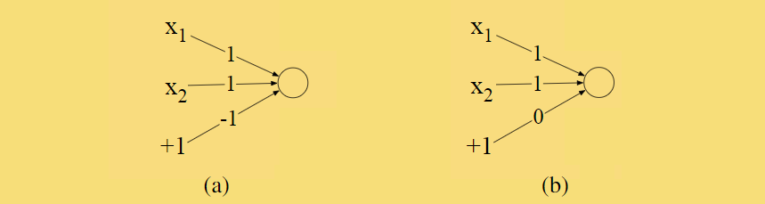
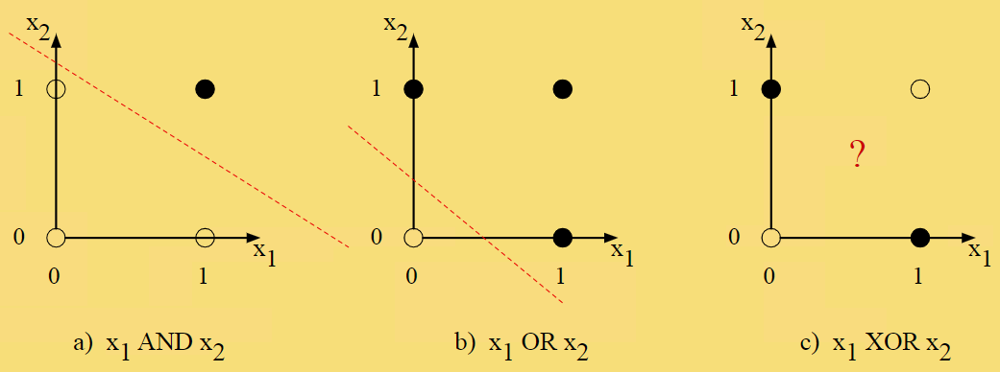
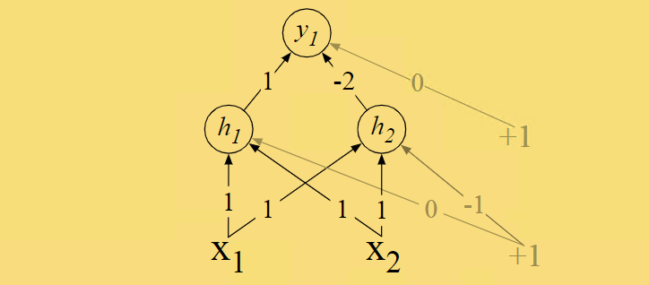
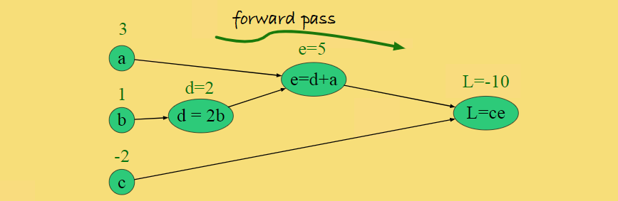
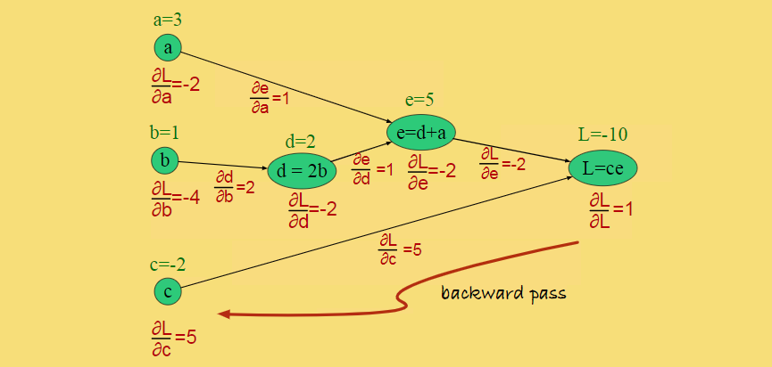
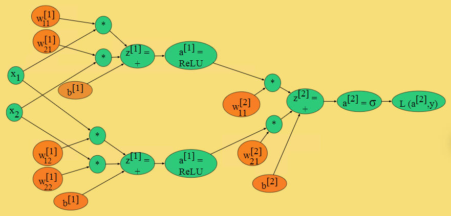
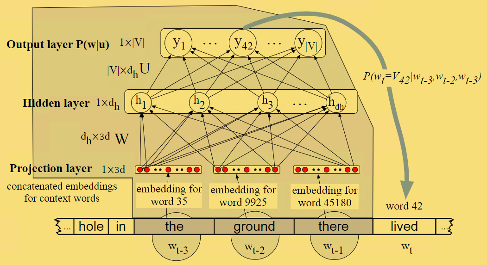
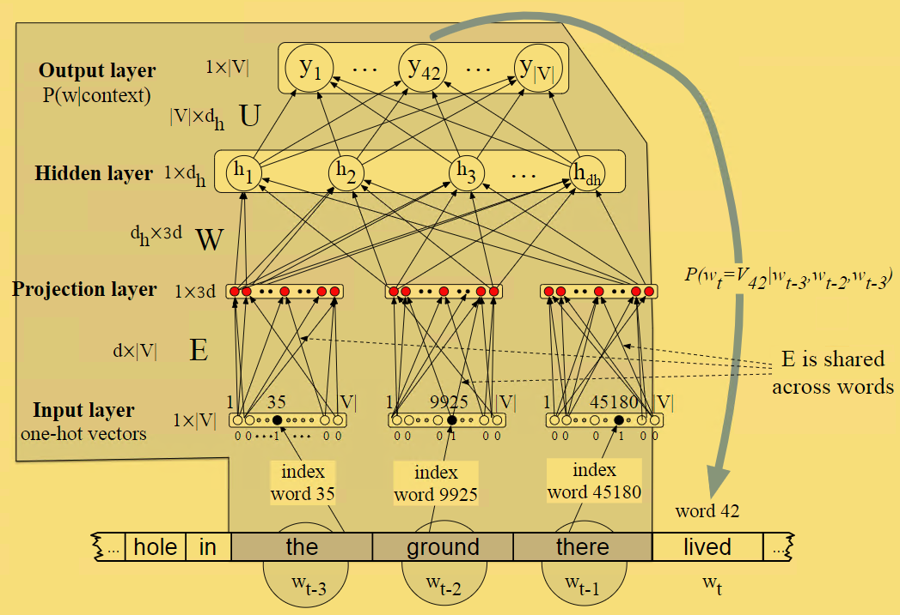

Neural Networks and Neural Language Models
Units
即一个节点，输入 - > 处理 ->输出
bias
vector 将上面的 sum 看作向量的dot product
activation 把unit中的输出传入activation，事实上是当前网络的实际输出：
sigmoid:
tanh:
ReLU
The XOR problem
建立一个 与 (a)， 或 (b) 网络非常简单, 但是不能建立一个网络 XOR

decision boundary $w1x1+w2x2+b = 0$
如果由决策边界 或者 决策面，说明是线性可分的，所以可以由单层网络直接模拟

由图可以明显看出 XOR 线性不可分。 所以 XOR不能被单层的感知机计算。可以叠加网络来解决这个问题。

中间加了hidden layer 形成新的input 。新形成的input 使得其线性可分。
Feed-Forward Neural Networks
e.g
Training Neural Nets
Loss funciton
- cross-entropy loss:
- 由于上述等式处理 当前为真的其他的都将是零，所以可以简化为negative log likelihood loss:
Computing thre Gradient
- error back-propagation
Computation Graphs
如果我们计算$L(a,b,c) = c(a + 2b)$。我们可以把计算步骤分解如下：
使用计算图来表示如下：

Backward differentiation on computation graphs
chain rule $f(x) = u(v(x))$ 其中$f$对 $x$的导数如下：
我们继续计算上图我们需要的3个导数：
在反向传播中我们从右边到左边计算，直到我们所需要的导数

Backward differentiation for a neural network

- the derivative of the sigmoid $\sigma$:
the derivative of tanh:
the derivative of the ReLU
More details on learning
dropout : 防止过拟合
hyperparameter：神经网络的参数是$权重\ W 和 bias\ b$ 通过梯度下降学习而来，而hyperparameters 是通过算法设计者自己选择。其包括 learning rate $\eta$, mini-batch size， the model architecture ，如何 正则化，采用哪种梯度下降算法等等。
Neural Language Models
Neural Models
advance： 获取更长的的信息。概括上下文。更好的预测准确率。 是其他模型的的基础。
disadvance： 训练速度慢
n-gram 模型
Embeddings
e.g:I have to make sure when I get home to feed the cat.
pretraining: 通过其他算法，如word2vec训练出embeding representations
当然也通常是在训练具体的任务中同时学习embedding

- one-hot vector :

首先初始换一个 E 矩阵, 该矩阵 乘以 one-hot 之后 ,实际上就是 one-hot 所代表的那个单词的embedding.
然后后面操作就和之前是一样的.
Training the neural language model
训练的参数 $ \theta = E,\ W,\ U,\ b$
使用梯度下降,反向传播.
- 由于在训练中不仅仅是训练参数,并且要预测下一个单词,所以训练出来的E 在预测下一个单词上更优秀.
通常情况下,输入是一个长文本,包括所有的句子, 随机权重,然后迭代. cross-entropy(negative log likelihood) loss :
梯度:
参考
1.Neural Networks and Neural Language Models
2.[Vector Semantics and Embeddings;
3.Word2vec Parameter Learning Explained; Xin Rong ronxin@umich.edu.
4.Distributed Representations of Sentences and Documents.pdfQuoc Le Tomas Mikolov Google Inc, 1600 Amphitheatre Parkway, Mountain View, CA 94043